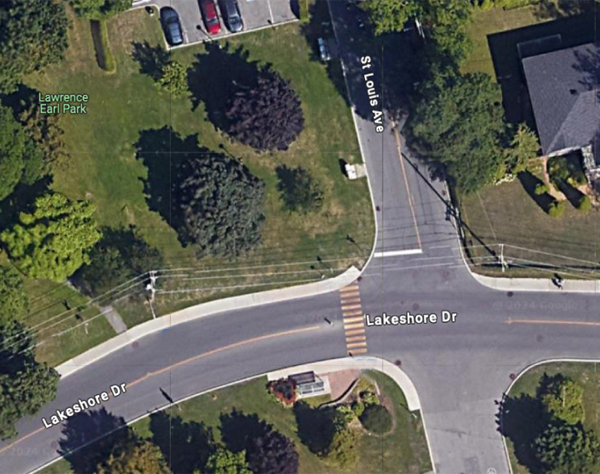

JARDIN DE DÉMONSTRATION DE POLLINISATION
Pour commémorer le 70e anniversaire du club
novembre 2024
Le 30 octobre 2024 la Cité de Dorval a creusé notre parcelle et l'a préparé pour la plantation. Comme les lutins du Père Noël, l'équipe du Jardin de pollinisateurs a été occupée à élaborer une liste de plantes indigènes à planter, en tenant compte de la hauteur et la couleur. De plus, une belle maquette de panneau a été créée, et est en attente d'approbation par la ville.
Dave Charron, le jardinier en chef de la Cité de Dorval

La Cité de Dorval a creusé notre parcelle et l'a préparé pour la plantation.
octobre 2024
Nous sommes ravis d’annoncer que ce projet progresse bien. Pour cartographier notre site, Catherine a rencontré Dave Charron, jardinier en chef de Dorval. Le projet s’est vu attribuer généreusement un grand espace au parc Lawrence Earl (à l’ouest de St-Louis), le long du bord du lac, sur lequel Catherine et Anna ont délimité une élégante parcelle en forme de rein.
Veuillez informer Anna (atrosich@videotron.ca) si vous avez des plantes à donner au pour ce projet. Nous recherchons particulièrement des plantes indigènes (voir la liste ci-dessous) qui prospèrent en plein soleil et dans des conditions d’humidité moyenne, qui ne se propagent pas trop agressivement et qui conviennent à une palette de couleurs violet/jaune/blanc. Nous accueillerions également avec plaisir des dons de bois flotté ou autres éléments structurels naturels.
Les plantes recherchées comprennent :
- Asters
- Eupatoire perfoliée / Boneset (Eupatorium perfoliatum)
- Pimprenelle canadienne / Canadian Burnet
- Onagre / Evening Primrose
- Faux tournesol / False Sunflower
- Hysope / Hyssop
- Joe Pye
- Monarde / Monarda
- Immortelle nacrée / Pearly Everlasting
- Rudbeckies / Rudbeckia
- Verveine bleue / Blue Vervain
- Achillée / Yarrow
Catherine avec la parcelle en forme de rein destinée pour le jardin de pollinisateurs.
L'emplacement de la parcelle au parc Lawrence Earl qui longe le chemin Bord-du-lac
septembre 2024
Le sous-comité SHED est heureux d'annoncer que notre demande de soutien de la ville pour planter un jardin de démonstration de pollinisateurs a été approuvée. La Cité de Dorval attribuera une grande zone publique dans le parc Lawrence Earl et fournira un soutien par l'intermédiaire du service d'horticulture. Le jardin servira de vitrine éducative pour aider les citoyens de Dorval à en apprendre davantage sur les jardins de pollinisateurs et commémorera également le 70e anniversaire du club. Le jardin présentera une palette de couleurs violette, jaune et blanche et sera en grande partie composé de plantes locales de notre région, dans la vallée du fleuve Saint-Laurent. Nous solliciterons des dons de plantes auprès de nos membres - alors restez à l'écoute!

Dorval Mayor, Marc Doret, with Catherine and Laura